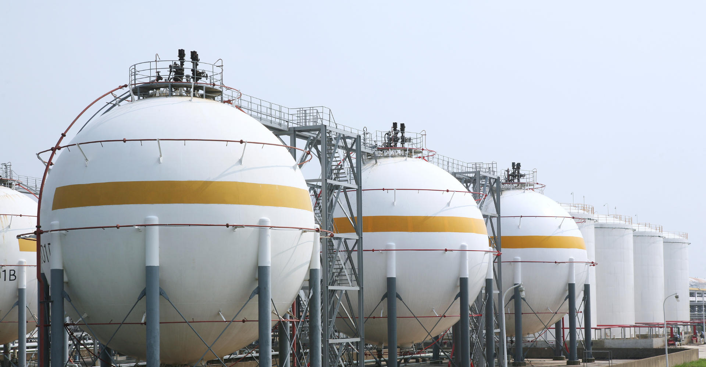
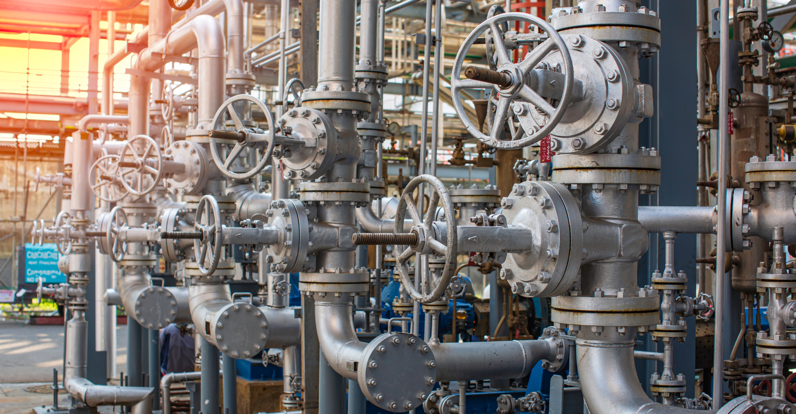

O gás natural, uma fonte de energia encontrada em depósitos subterrâneos e formado pela decomposição de matéria orgânica ao longo de milhões de anos. Composto principalmente por metano (CH4), o gás natural é utilizado de diversas maneiras, incluindo para aquecer residências, gerar eletricidade e como matéria-prima para a produção de produtos químicos e fertilizantes. É considerado uma opção mais limpa em comparação com outros combustíveis fósseis, uma vez que emite menos dióxido de carbono (CO2) quando queimado.

O gás natural oferece várias vantagens sobre outros tipos de energia. Além de ser abundante e eficiente, ele emite menos poluentes, como dióxido de enxofre e óxidos de nitrogênio, quando comparado ao carvão e ao petróleo. Isso torna o gás natural uma opção importante para a redução das emissões de gases de efeito estufa e a mitigação das mudanças climáticas. Além disso, o gás natural é versátil, podendo ser usado em veículos, como gás veicular (GNV), e para a geração de eletricidade de forma eficiente.
Embora o gás natural seja considerado uma fonte de energia mais limpa do que o carvão e o petróleo, ele ainda contribui para a emissão de gases de efeito estufa, especialmente o metano, que é um gás altamente potente. Portanto, é crucial que a extração e o uso do gás natural sejam gerenciados de maneira responsável, com a implementação de tecnologias que minimizem vazamentos de metano e maximizem a eficiência na geração de energia.

Um papel fundamental na transição energética, pois é visto como uma ponte entre os combustíveis fósseis e as energias renováveis. Sua capacidade de ser usado de forma flexível para atender à demanda por energia, juntamente com o crescente desenvolvimento de tecnologias de captura de carbono, faz do gás natural uma alternativa estratégica enquanto o mundo avança em direção a fontes de energia mais limpas e sustentáveis.